<!DOCTYPE html>
<html>
 
<body background="Laketahoe1.jpg" style="background-repeat:no-repeat; background-size=height="100", width= "600">

</body>
</html>
<!-- Below code is for my signature that also acts as home  page  -->

<br><br><br>
<center><a href="index.html">
 </a></center>
<h1 align="center">Rodrigo Cisneros </h1>

<br>

 <table height="100%" width="100%" cellpadding="0" cellspacing="0" border="0">
   <tr>
     <td valign="top" align="left" background="http://www.yoursite.com/yourimages/photo.jpg" style="background-repeat:no-repeat; background-size:cover;">


<P class = "search" align="Left"><input type="text" name="search" placeholder="Search this site...."></P>


<br>
<style type= "text/css">


<html> 

</Style>

<head>

    <meta charset="UTF-8">
    <title>Rodrigo Cisneos</title>

    <link rel="stylesheet" href="mystyle4.css">
 </head>


  <ul class="tabs">
  
<!---Below are the five differnt tabs for the website.
-->

 <li>
          <input type="radio" name="tabs" id="tab-1" checked> 
          <label for = "tab-1">Personal Information </label>


<div class="tab-content" height: 200px; >
          <br>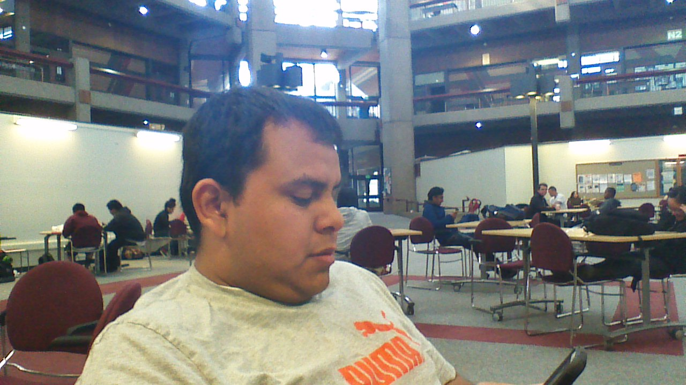<p float="left-10"> Hello there, Welcome to my website. My name is Rodrigo Cisneros. i am a student at California States University of Monterey Bay.  <br><br>
          
          I am originally from Mexico, but i have lived in washington state for some time and have been living in california, for around 15 years now. i have lived in the sillicon valley for most of my life and its great, but i prefered to live in monterey, california. the reason is thaty it is an amazing weather here, it does not get crazy hot like san jose and its sorrounded by great beaches, where you can go and relax. 
          <br><br>

          i love to play sports, my favorite sport is soccer. but i like to play others like basketball, tennis, volleyball,and many others more. i love the outdoors, going sights seeing, hiking or just going out to the forest and relax
          <br><br>

         on my free time i like to go out with friends and family hiking and into the forest or the beach, just to relax from work and school.
                        <br><br>

         I also enjoy reading motivational quotes and watching motivational videos, especially sports ones. one of my favorite quotes is below. it helps me keep going, whenever i feel too tired. 
                        
                        <blockquote> 
                         
        <font color="Orange"> <align= "center">
Kee your thoughts positive, because your thoughts
	 become YOUR WORDS. <br>
Keep your words positive, because your words 
	become YOUR BEHAVIOR. <br>
Keep your behavior postitive, because your behavior 
	becomes YOUR HABITS. <br>
Keep your habits positive, because your habits 
	become YOUR VALUES. <br>
Keep your values positive, because your values 	
	become YOUR DESTINY. <br>
-Mahatma Gandhi </font> </center>
                       
    </blockquote>
                        
         
 please feel free to Keep exploring my page. If you would like to know more about me or would like to contact me here is my email.<a href="mailto:rcisnerosmartinez@csumb.edu?subject=hello%20again" target="_blank">rcisnerosmartinez@csumb.edu </a>.  
          

<br><br>

<a href="https://www.facebook.com/rodrigo.cisneros.77?ref=bookmarks" target="_blank"></a>

<a href="https://twitter.com/login" target="_blank"></a>

<a href="https://www.youtube.com/watch?v=3oru1J48Pc4" target="_blank"></a>

<a href="https://www.linkedin.com/in/rodrigo-cisneros-7bb117b3/" target="_blank"> </a>  

<a href="https://www.instagram.com/roycm_11/?hl=en" target="_blank"></a>

 <p style="clear: both;">

<footer>
  <p><center>&copy; Copyright 2017. All Rights Reserved.</center></p>
</footer>


 
 <li>
          <input type="radio" name="tabs" id="tab-2">
          <label for = "tab-2">Education Background</label>

<!-- Within each tab, if we want to write something, like some information or paragraph, we need to create DIV  and then close the DIV at end of the tab when you are done 
adding information-->
 
<div class="tab-content">

 <div class="image123">
    </div>  
    <div>
     <p> I graduate attended high school in Silicon Valley and graduated from <i>king’s academy</i> in 2012. since then I have attended foothill community college and mission college. my years at both schools, have helped me a lot. it gave me a better idea of what I could with my degree and how I can apply myself to the goals I set.my years at mission college I was able to play soccer for one year which helped me get even more involved in my school. Just like many people I had to work in order to for my college which means that I was never able to fully focus on my school until I transferred to<b> California state university of Monterey Bay (CSUMB)</b>.
     <br> I transfer to the university on the fall of 2015 after receiving my AA from mission college in Business Administration and thanks to the help of my family I was able to fully focus on school and found a part time job which helped me to pay off some of the tuition my scholarships did not cover. I have enjoyed my years here at CSUMB, because I have learned so much, many of my instructors have helped me become more opened minded and to be more eager to learn. The school is great, we have awesome teachers who really care about the students and their education, instead of just being here for the money. I will be graduating in the spring 2017 and moving onto a full time supervisor position at my current job and will be looking for better opportunities.  </div></p>
     
 <br>
 
 <div>
    
  
    
  </div>

<p style="float: left; margin-left: -3%; margin-right: 0%; 
margin-bottom: 0.5em;">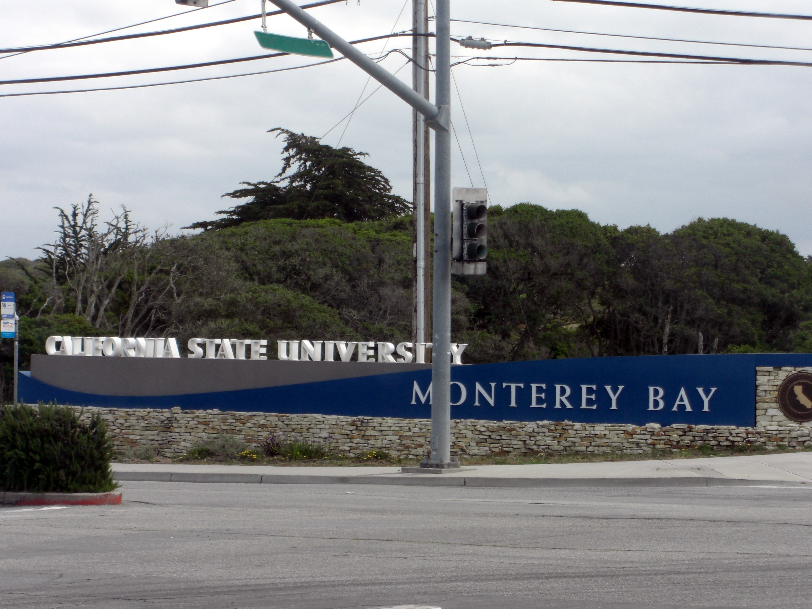</a></p>
<p style="clear: both;">


 </li>

 
 <!-- The below codes are for Tab 3 - called Reviews -->
  <li>
          <input type="radio" name="tabs" id="tab-3">
          <label for = "tab-3">Professional Background</label>
          <div class="tab-content">
          
          
          <h2> My Home State</h2>
          This is my home state, amazing palce to live in, so many different cultures to learn from and so much diversity, this makes this state an amazing place to live in. <br><br>
          
<!--the following code was borrowed from Amcharts.com -->
<iframe src="https://www.google.com/maps/embed?pb=!1m18!1m12!1m3!1d405688.6188964515!2d-122.32129567973408!3d37.403018506588076!2m3!1f0!2f0!3f0!3m2!1i1024!2i768!4f13.1!3m3!1m2!1s0x808fb68ad0cfc739%3A0x7eb356b66bd4b50e!2sSilicon+Valley%2C+CA!5e0!3m2!1sen!2sus!4v1491427071213" width="600" height="550" frameborder="0" style="border:0" allowfullscreen></iframe>
</script>
             
        <br>
         
                             
          
          <h2> Professional Background</h2>
The table below shows the different jobs, i have held and the postions within those different jobs.</i>.
<br>
<br>
<table color="orange" border="12"  style="width:100%">
<tr>
<th align="left"> Starting year </th> 
<th align="left"> Ending year</th> 
<th align="left"> Company</th> 
<th align="left"> Job title </th> 
</tr>

<tr>
<td> 2008 </td>
<td> 2011 </td>
<td> The Pasta Market<br> Los Altos, california<br></td>
<td> Waiter/Cashier </td>
</tr>

<tr>
<td> 2009 </td>
<td> 2011 </td>
<td> Quiznos<br> Los Altos, California <br></td>
<td> cashier/assitant supervisor </td>
</tr>

<tr>
<td> 2010 </td>
<td> 2012</td>
<td> Subway<br> Los Altos, California <br></td>
<td> Assitant supervisor</td>
</tr>

<tr>
<td> 2011</td>
<td> 2012 </td>
<td> Payless<br> Los Altos, California <br></td>
<td> cashier/assitant supervisor </td>
</tr>

<tr>
<td> 2012 </td>
<td> 2013</td>
<td> Mi Pueblo market<br> Palo Alto, California <br></td>
<td> Meat Department Supervisor</td>
</tr>

<tr>
<td> 2013 </td>
<td> 2014 </td>
<td> IKEA <br> Palo ALto, California <br></td>
<td> Bistro assistant supervisor and <br> AS-IS assitant Supervisor </td>
</tr>

<tr>
<td> 2013 </td>
<td> 2015 </td>
<td> MVLA Soccer Club<br> Los Altos, California <br></td>
<td> Soccer coach for boys <br> Under 7 years old. </td>
</tr>

</table>

<br>
<br>

The table below shows awards, that i received from my previous jobs.
<br>
<br>
<table border=7" style= "width:100%"> 
<tr>
<th align="left"> Year </th> 
<th align="left"> Compmany</th> 
<th align="left"> Award</th> 
<th align="left"> Details of the award</th> 
</tr>

<tr>
<td> 2010 </td>
<td> Quiznos </td>
<td> Employee of the month </td>
<td> Received for the month of March. This award is given to a person, based on their performances. <br> this is based on how you work, your attendance and what you do extra to stand out of the rest of your coworkers. 
</td>
</tr>

<tr>
<td> 2011 </td>
<td> Payless</td>
<td> Employee of the month </td>
<td> Received for the month of May.this award is given to a person, based on their performances. <br> this is based on how you work, your attendance and sales for the month.  
</td>
</tr>

</table>

<br>
<h2> <a name="Professional Background">Professional Background</a></h2>
<p> As you can see i have been working and learning management skills, through out most of my jobs. i have been lucky enough to have great supervisors who have helped me learn and become a great supervisor. <br> Most of my supervisors were also nice enough to give me the opportunity to move up in the  various companies and allowed me to become an assitant and afterwards a department supervisor.</p> 

<div>
    
  
    
  </div>
<div>
    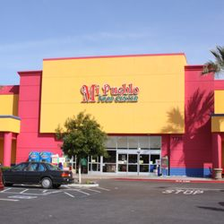
  
    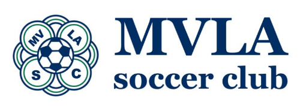
  </div>

<br>
          </div>
 </li>
 

<!-- The below codes are for Tab 4 - called Contacts -->
  <li>
          <input type="radio" name="tabs" id="tab-4">
          <label for = "tab-4">Training and Skills</label>
          
<!-- Within each tab, if we want to write something, like some information or paragraph, we need to create DIV  and then close the DIV at end of the tab when you are done 
adding information-->

<div class="tab-content">
<p> Through out my working career, i have been able to take some great training. some of this include soccer coaching, i took a 6 month training, before i started coaching.For the meat department job that i had, i took a 3 month training to learn how to use the machines and be safe, while using them.<br> Currently at my school, i am training in <b>HTMl Coding</b>, its a begining point, but i know it will help me a lot in the future. Below are 2 different pictures which can give you a better idea of how coach traing works. </p>

<div>
    
  
    
  </div>
<p> The pictures above are very similar. the one on your left hand, is basically a sample of how coaching works. for examples what do you for each different age group of players. The second picture located to the right shows just like the other picture the different stages of coaching and the different coaching license one needs to coach.   					
  <br> <br>  
           
<!-- Map code that I received directly from google. All you need to do is type the company name in google map. Then click share - then look at link in "embed map"-->
<iframe src="https://www.google.com/maps/embed?pb=!1m14!1m8!1m3!1d3170.5799806518717!2d-122.11432188791355!3d37.37611416146383!3m2!1i1024!2i768!4f13.1!3m3!1m2!1s0x0%3A0xcaa1a52079d498f0!2sMVLA+Soccer+Club!5e0!3m2!1sen!2sus!4v1491426870491" width="600" height="450" frameborder="0" style="border:0" allowfullscreen></iframe>

<br>
</li>

  <li>
          <input type="radio" name="tabs" id="tab-5">
          <label for = "tab-5">Pictures</label>
 <div class="tab-content">
        <p> Below are some pictures, of some amazing places where i have been around in california. </p>  
<div>
    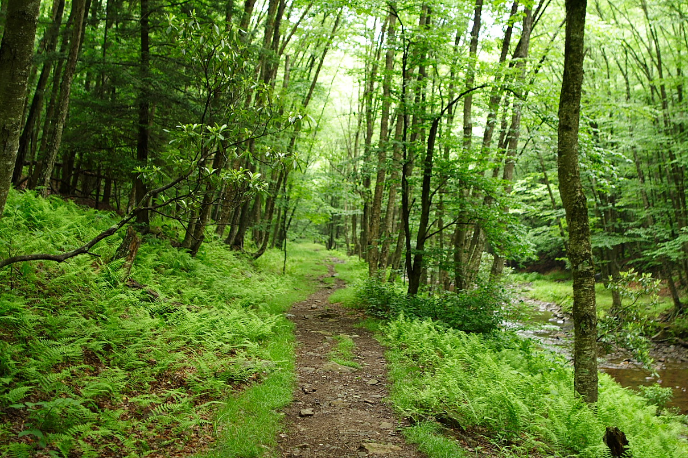
    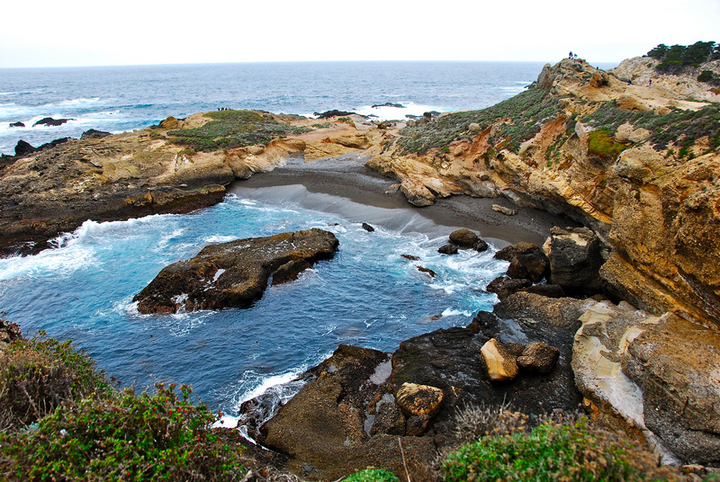
  </div>

<div>
    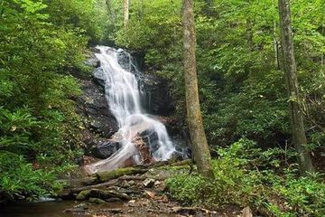
    
  </div>

<div>
    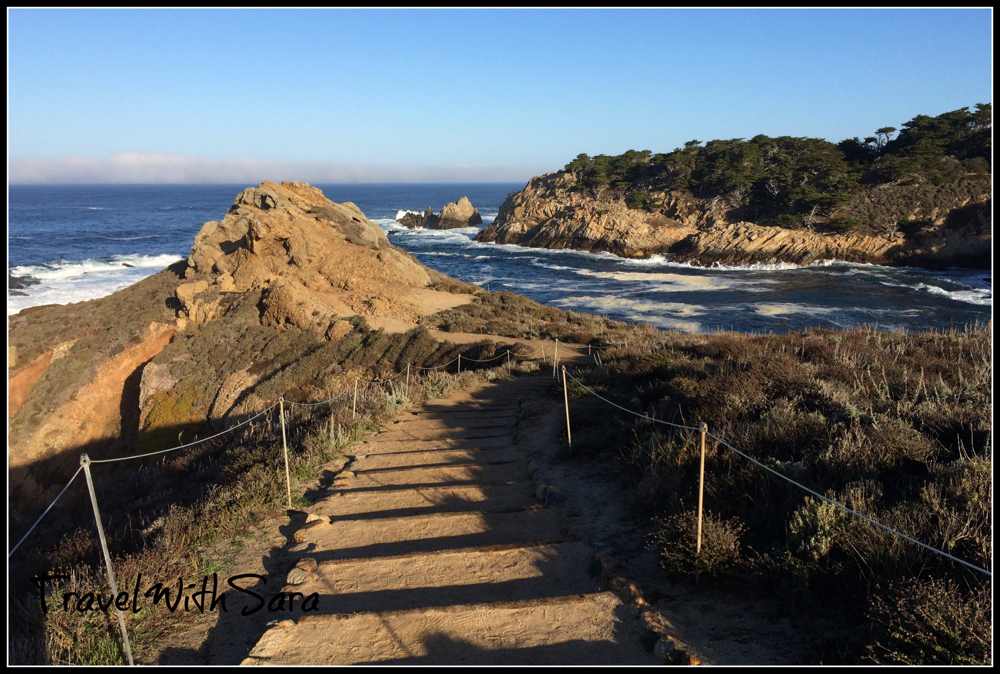
    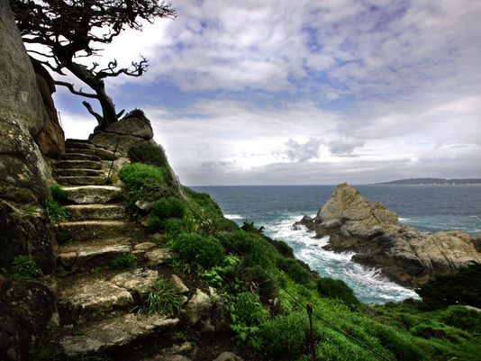
  </div>
  <div>
    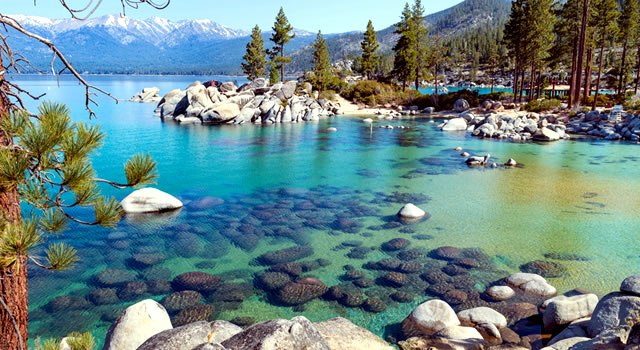
    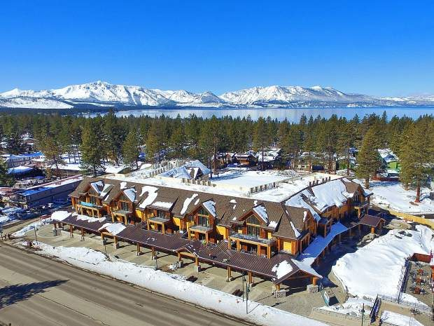
  </div>

<div>
    
    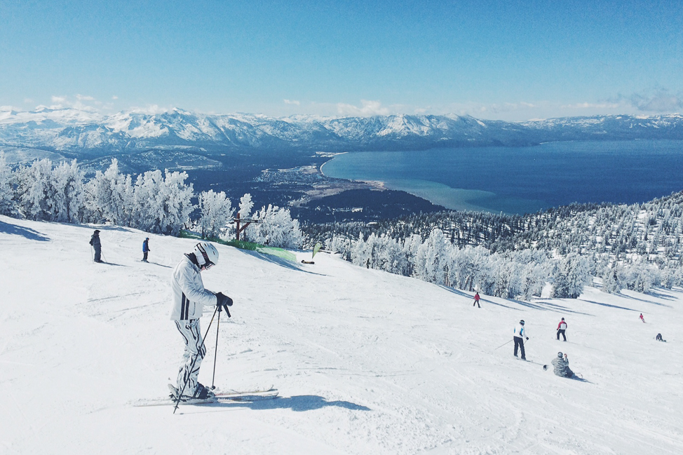
  </div>
 </li>


</html>

